Secondary analysis
James Ashmore
2021-03-26
Last updated: 2021-03-30
Checks: 7 0
Knit directory: LPMP_EHF_B/
This reproducible R Markdown analysis was created with workflowr (version 1.6.2). The Checks tab describes the reproducibility checks that were applied when the results were created. The Past versions tab lists the development history.
Great! Since the R Markdown file has been committed to the Git repository, you know the exact version of the code that produced these results.
Great job! The global environment was empty. Objects defined in the global environment can affect the analysis in your R Markdown file in unknown ways. For reproduciblity it’s best to always run the code in an empty environment.
The command set.seed(20200630) was run prior to running the code in the R Markdown file. Setting a seed ensures that any results that rely on randomness, e.g. subsampling or permutations, are reproducible.
Great job! Recording the operating system, R version, and package versions is critical for reproducibility.
Nice! There were no cached chunks for this analysis, so you can be confident that you successfully produced the results during this run.
Great job! Using relative paths to the files within your workflowr project makes it easier to run your code on other machines.
Great! You are using Git for version control. Tracking code development and connecting the code version to the results is critical for reproducibility.
The results in this page were generated with repository version dab805f. See the Past versions tab to see a history of the changes made to the R Markdown and HTML files.
Note that you need to be careful to ensure that all relevant files for the analysis have been committed to Git prior to generating the results (you can use wflow_publish or wflow_git_commit). workflowr only checks the R Markdown file, but you know if there are other scripts or data files that it depends on. Below is the status of the Git repository when the results were generated:
Ignored files:
Ignored: .DS_Store
Ignored: .Rhistory
Ignored: .Rproj.user/
Ignored: analysis/cache/
Ignored: data/
Ignored: output/
Ignored: renv/.gitignore
Ignored: renv/library/
Ignored: renv/settings.dcf
Ignored: resources/
Ignored: shiny/
Ignored: slides/
Untracked files:
Untracked: analysis/12-atlas-trajectory.Rmd
Untracked: analysis/geneset-activity.Rmd
Unstaged changes:
Modified: _workflowr.R
Modified: analysis/_site.yml
Deleted: analysis/backup/11-atlas-neighbors.Rmd
Deleted: analysis/backup/12-atlas-trajectory.Rmd
Deleted: analysis/backup/15-scenic-analysis.Rmd
Deleted: analysis/backup/17-haystack-analysis.Rmd
Modified: code/weightedkNN.R
Note that any generated files, e.g. HTML, png, CSS, etc., are not included in this status report because it is ok for generated content to have uncommitted changes.
These are the previous versions of the repository in which changes were made to the R Markdown (analysis/secondary-analysis.Rmd) and HTML (docs/secondary-analysis.html) files. If you’ve configured a remote Git repository (see ?wflow_git_remote), click on the hyperlinks in the table below to view the files as they were in that past version.
| File | Version | Author | Date | Message |
|---|---|---|---|---|
| Rmd | dab805f | James Ashmore | 2021-03-30 | Build |
| html | a724071 | James Ashmore | 2021-03-30 | Build |
| Rmd | 0c3e80d | James Ashmore | 2021-03-30 | Build |
| html | ce8b0de | James Ashmore | 2021-03-30 | Build |
| Rmd | d2795ca | James Ashmore | 2021-03-30 | Build |
| html | 451e2f3 | James Ashmore | 2021-03-30 | Build |
| Rmd | dda4956 | James Ashmore | 2021-03-30 | Build |
| html | f91f8d3 | James Ashmore | 2021-03-30 | Build |
| Rmd | ab1a8c0 | James Ashmore | 2021-03-30 | Build |
| html | 2ec8936 | James Ashmore | 2021-03-30 | Build |
| Rmd | 5ed7bae | James Ashmore | 2021-03-30 | Build |
| html | ebfe9ae | James Ashmore | 2021-03-29 | Build |
| Rmd | 73b8fba | James Ashmore | 2021-03-29 | Build |
| html | e993dbe | James Ashmore | 2021-03-26 | Build |
| Rmd | 092203d | James Ashmore | 2021-03-26 | Build |
| html | a449b56 | James Ashmore | 2021-03-26 | Build |
| Rmd | 7d63b36 | James Ashmore | 2021-03-26 | Build |
| html | 0926b39 | James Ashmore | 2021-03-26 | Build |
| Rmd | 4c2d94e | James Ashmore | 2021-03-26 | Build |
| html | cb9ea27 | James Ashmore | 2021-03-26 | Build |
| html | ba02853 | James Ashmore | 2021-03-26 | Build |
| Rmd | 8810608 | James Ashmore | 2021-03-26 | Build |
Setup
Set chunk options:
knitr::opts_chunk$set(
autodep = TRUE,
cache = TRUE,
cache.path = "cache/secondary-analysis.Rmd/",
dev = "png",
echo = TRUE,
error = FALSE,
message = FALSE,
warning = FALSE
)Load Bioconductor packages:
library(bluster)
library(scater)
library(scran)
library(scuttle)
library(slingshot)Load CRAN packages:
library(ggforce)
library(ggplot2)
library(ggthemes)
library(pheatmap)Read experiment object:
sce <- readRDS("output/09-cell-annotation.rds")Feature selection
List marker genes:
ids <- c(
"ENSMUSG00000042812" = "Foxf1",
"ENSMUSG00000037335" = "Hand1",
"ENSMUSG00000047002" = "Msgn1",
"ENSMUSG00000051323" = "Pcdh19",
"ENSMUSG00000014773" = "Dll1",
"ENSMUSG00000003436" = "Dll3",
"ENSMUSG00000062327" = "T",
"ENSMUSG00000030699" = "Tbx6",
"ENSMUSG00000026497" = "Mixl1",
"ENSMUSG00000030544" = "Mesp1",
"ENSMUSG00000029231" = "Pdgfra",
"ENSMUSG00000044338" = "Aplnr",
"ENSMUSG00000021994" = "Wnt5a",
"ENSMUSG00000024232" = "Bambi",
"ENSMUSG00000027559" = "Car3",
"ENSMUSG00000026124" = "Cfc1",
"ENSMUSG00000051159" = "Cited1",
"ENSMUSG00000031074" = "Fgf3",
"ENSMUSG00000027004" = "Frzb",
"ENSMUSG00000024907" = "Gal",
"ENSMUSG00000021469" = "Msx2",
"ENSMUSG00000010760" = "Phlda2",
"ENSMUSG00000042821" = "Snai1",
"ENSMUSG00000053560" = "Ier2",
"ENSMUSG00000000303" = "Cdh1",
"ENSMUSG00000045394" = "Epcam",
"ENSMUSG00000028640" = "Tfap2c",
"ENSMUSG00000023043" = "Krt18",
"ENSMUSG00000023906" = "Cldn6",
"ENSMUSG00000018569" = "Cldn7",
"ENSMUSG00000029755" = "Dlx5"
)Plot heatmap of marker genes:
plotHeatmap(
object = sce,
features = ids,
exprs_values = "logcounts",
center = TRUE,
zlim = c(-4, +4),
symmetric = TRUE
)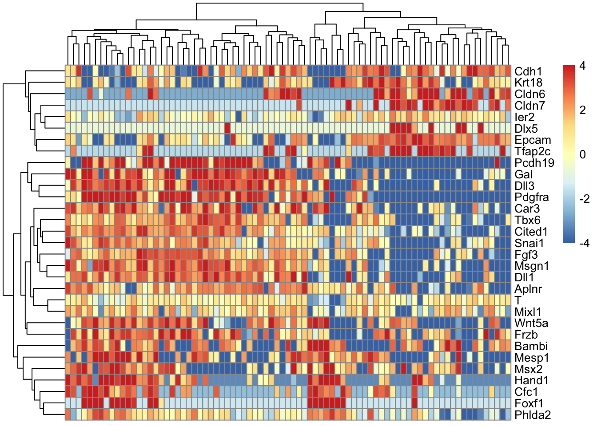
Test for significant correlations:
set.seed(0100110000)
res <- correlatePairs(
x = logcounts(sce),
pairings = list(query = ids, reference = rownames(sce))
)Subset by significance threshold:
sig <- subset(res, FDR < 0.05)Plot heatmap of correlated marker genes:
plotHeatmap(
object = sce,
features = unique(sig$gene2),
exprs_values = "logcounts",
center = TRUE,
zlim = c(-4, +4),
symmetric = TRUE,
fontsize = 4
)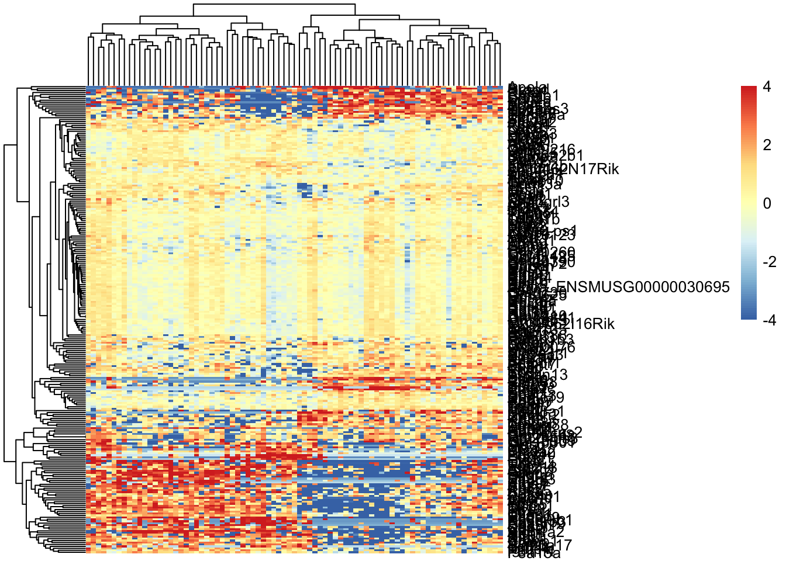
Set row subset:
rowSubset(sce, "HVG") <- c(ids, sig$gene2)Dimensionality reduction
Perform PCA on expression data:
set.seed(0010110101)
sce <- denoisePCA(
x = sce,
technical = metadata(sce)$modelGeneVarWithSpikes,
subset.row = rowSubset(sce, "HVG"),
BSPARAM = BiocSingular::ExactParam(),
)Perform TSNE on PCA data:
set.seed(1010000010)
sce <- runTSNE(sce, dimred = "PCA")Perform UMAP on PCA data:
set.seed(0111111001)
sce <- runUMAP(sce, dimred = "PCA")Perform DiffusionMap on PCA data:
set.seed(0011000000)
sce <- runDiffusionMap(sce, dimred = "PCA")Clustering
Cluster rows of PCA data:
set.seed(0101100010)
mem <- clusterRows(reducedDim(sce, "PCA"), NNGraphParam(type = "jaccard", cluster.fun = "louvain"))Set column labels:
colLabels(sce) <- memPlot heatmap of marker genes:
plotHeatmap(
object = sce,
features = ids,
exprs_values = "logcounts",
center = TRUE,
zlim = c(-4, +4),
symmetric = TRUE,
colour_columns_by = "label"
)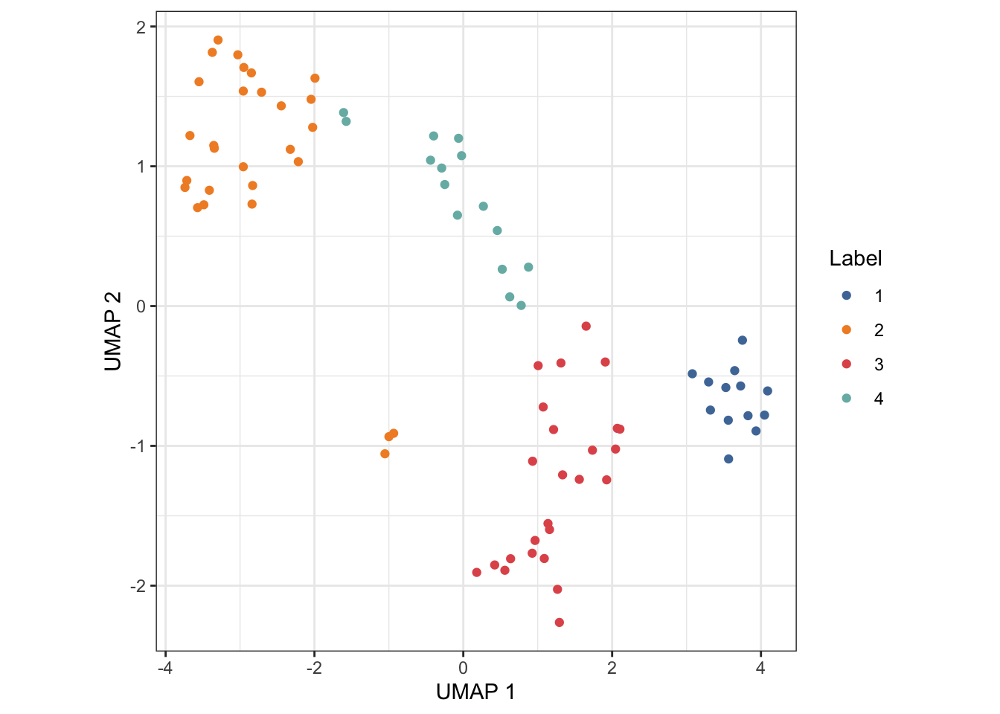
Plot heatmap of correlated marker genes:
plotHeatmap(
object = sce,
features = unique(sig$gene2),
exprs_values = "logcounts",
center = TRUE,
zlim = c(-4, +4),
symmetric = TRUE,
colour_columns_by = "label"
)
Create a per-cell data.frame:
dat <- makePerCellDF(sce)PCA
Plot PCA dimension coloured by label:
ggplot(dat, aes(PCA.1, PCA.2)) +
geom_point(aes(colour = label)) +
scale_colour_tableau() +
labs(x = "PCA 1", y = "PCA 2", colour = "Label") +
theme_bw() +
coord_fixed()
| Version | Author | Date |
|---|---|---|
| 2ec8936 | James Ashmore | 2021-03-30 |
TSNE
Plot TSNE dimension coloured by label:
ggplot(dat, aes(TSNE.1, TSNE.2)) +
geom_point(aes(colour = label)) +
scale_colour_tableau() +
labs(x = "TSNE 1", y = "TSNE 2", colour = "Label") +
coord_fixed() +
theme_bw() +
theme(aspect.ratio = 1)
| Version | Author | Date |
|---|---|---|
| 2ec8936 | James Ashmore | 2021-03-30 |
UMAP
Plot UMAP dimension coloured by label:
ggplot(dat, aes(UMAP.1, UMAP.2)) +
geom_point(aes(colour = label)) +
scale_colour_tableau() +
labs(x = "UMAP 1", y = "UMAP 2", colour = "Label") +
coord_fixed() +
theme_bw() +
theme(aspect.ratio = 1)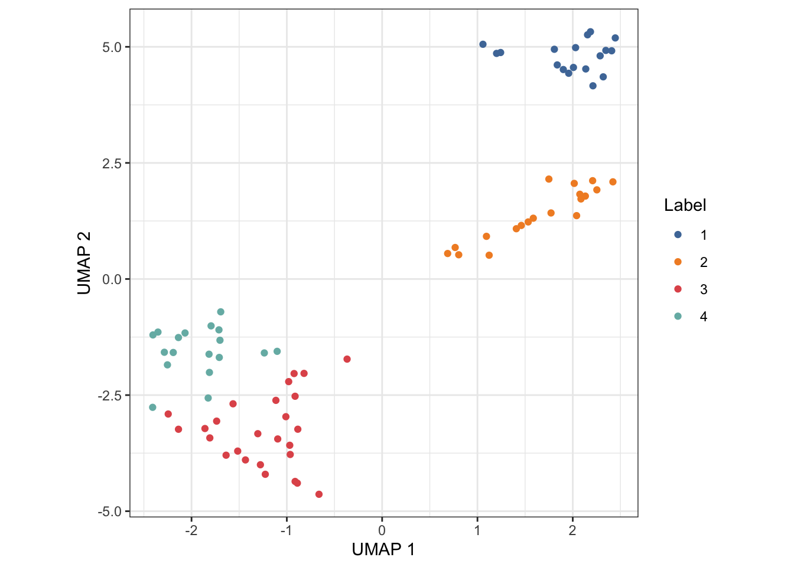
DiffusionMap
Plot DiffusionMap dimension coloured by label:
ggplot(dat, aes(DiffusionMap.1, DiffusionMap.2)) +
geom_point(aes(colour = label)) +
scale_colour_tableau() +
labs(x = "DC 1", y = "DC 2", colour = "Label") +
theme_bw() +
theme(aspect.ratio = 1)
Marker detection
Find candidate marker genes:
res <- findMarkers(sce, colLabels(sce), test.type = "t", pval.type = "any")Subset by significance threshold:
sig <- lapply(res, subset, FDR < 0.05)
sig <- Filter(nrow, sig)
sig <- SimpleList(sig)Table
Print table of significant marker genes:
Label 1
Label 2
Label 3
Label 4
Effect
Plot heatmap of marker effect sizes:
for (n in names(sig)) {
dat <- subset(sig[[n]], Top <= 10)
mat <- getMarkerEffects(dat, prefix = "logFC")
lim <- max(abs(mat))
cat("#### Label", n, "\n")
pheatmap(mat, breaks = seq(-lim, +lim, length.out = 101))
cat("\n\n")
}Label 1
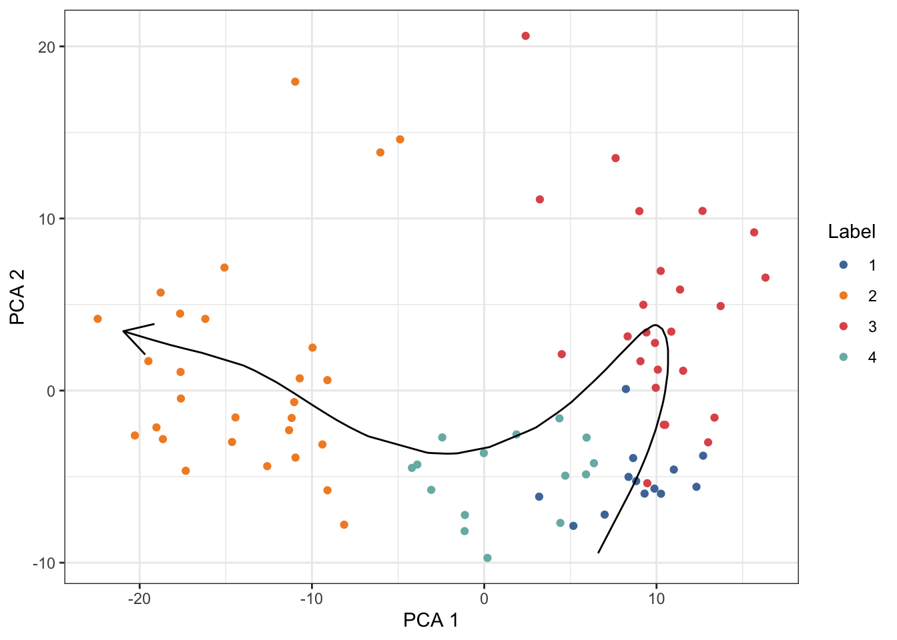
Label 2
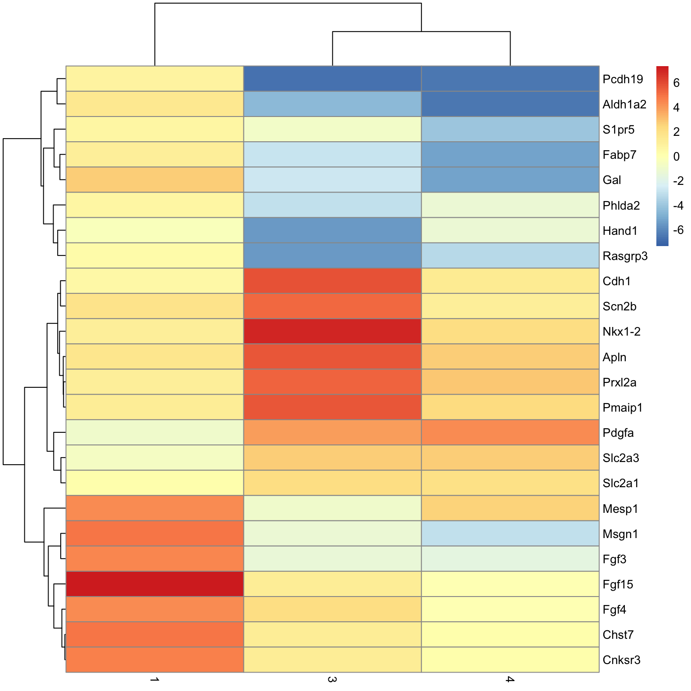
Label 3
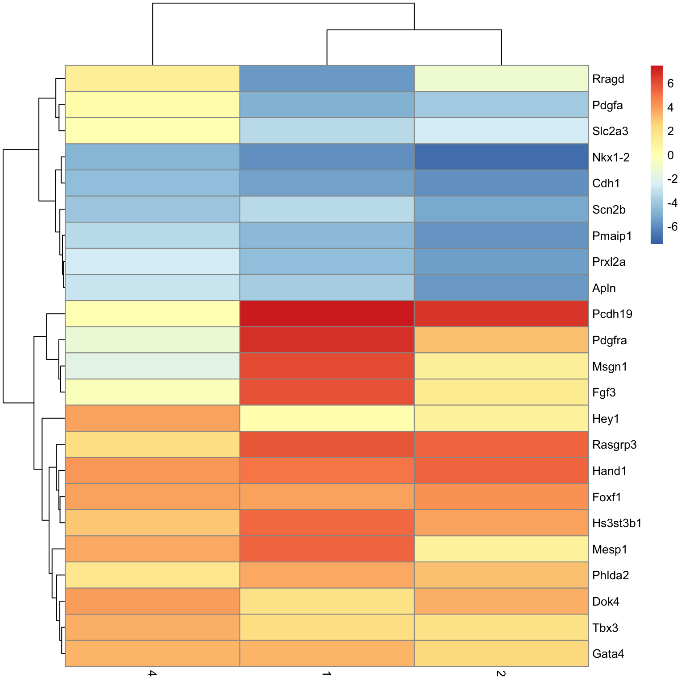
Label 4
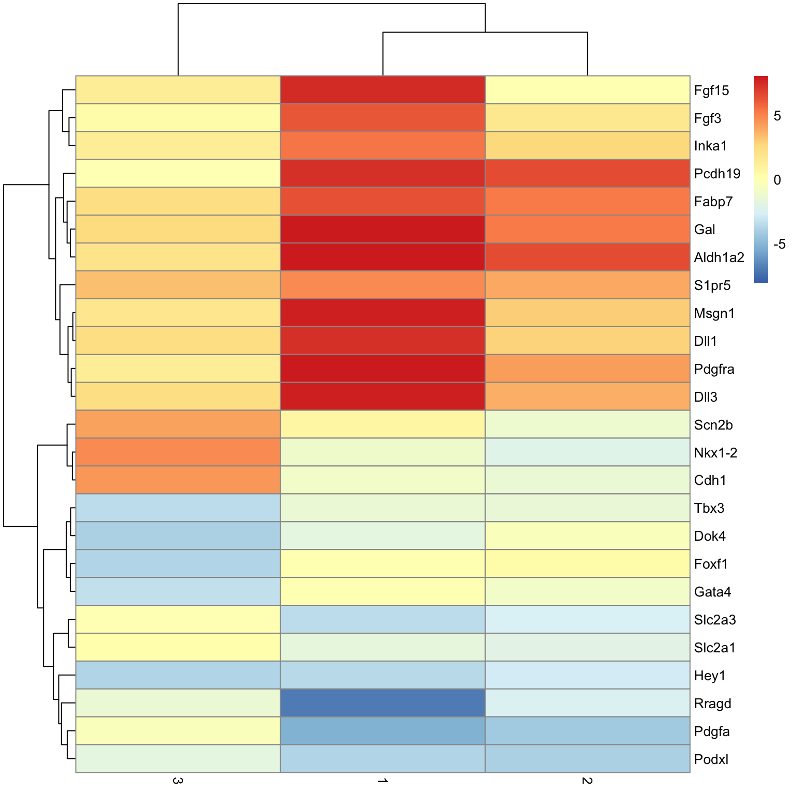
Trajectory analysis
Perform lineage inference with Slingshot:
set.seed(0111101000)
sce <- slingshot(sce, clusterLabels = colLabels(sce), reducedDim = "PCA")Create a per-cell data.frame:
dat <- makePerCellDF(sce)Curve 1
PCA
Embed trajectory in PCA space:
cur <- embedCurves(sce, "PCA")Extract first principal curve:
cur.1 <- slingCurves(cur)[[1]]
cur.1 <- data.frame(cur.1$s[cur.1$ord, ])
colnames(cur.1) <- c("Dim.1", "Dim.2")Plot PCA dimension coloured by label:
ggplot(dat, aes(PCA.1, PCA.2)) +
geom_point(aes(colour = label)) +
geom_path(data = cur.1, aes(Dim.1, Dim.2), arrow = arrow()) +
scale_colour_tableau() +
labs(x = "PCA 1", y = "PCA 2", colour = "Label") +
coord_fixed() +
theme_bw()
Plot PCA dimension coloured by pseudotime:
ggplot(dat, aes(PCA.1, PCA.2)) +
geom_point(aes(colour = slingPseudotime_1), size = 2) +
geom_path(data = cur.1, aes(Dim.1, Dim.2), arrow = arrow()) +
scale_colour_viridis_c() +
labs(x = "PCA 1", y = "PCA 2", colour = "Pseudotime") +
coord_fixed() +
theme_bw()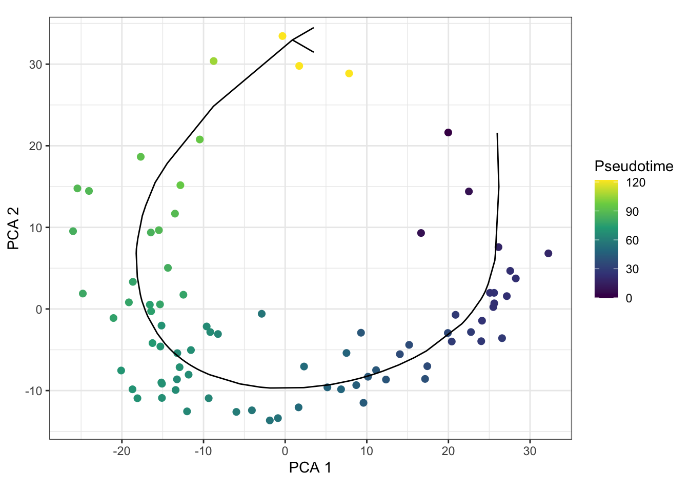
TSNE
Embed trajectory in TSNE space:
cur <- embedCurves(sce, "TSNE")Extract first principal curve:
cur.1 <- slingCurves(cur)[[1]]
cur.1 <- data.frame(cur.1$s[cur.1$ord, ])
colnames(cur.1) <- c("Dim.1", "Dim.2")Plot TSNE dimension coloured by label:
ggplot(dat, aes(TSNE.1, TSNE.2)) +
geom_point(aes(colour = label)) +
geom_path(data = cur.1, aes(Dim.1, Dim.2), arrow = arrow()) +
scale_colour_tableau() +
labs(x = "TSNE 1", y = "TSNE 2", colour = "Label") +
theme_bw() +
theme(aspect.ratio = 1)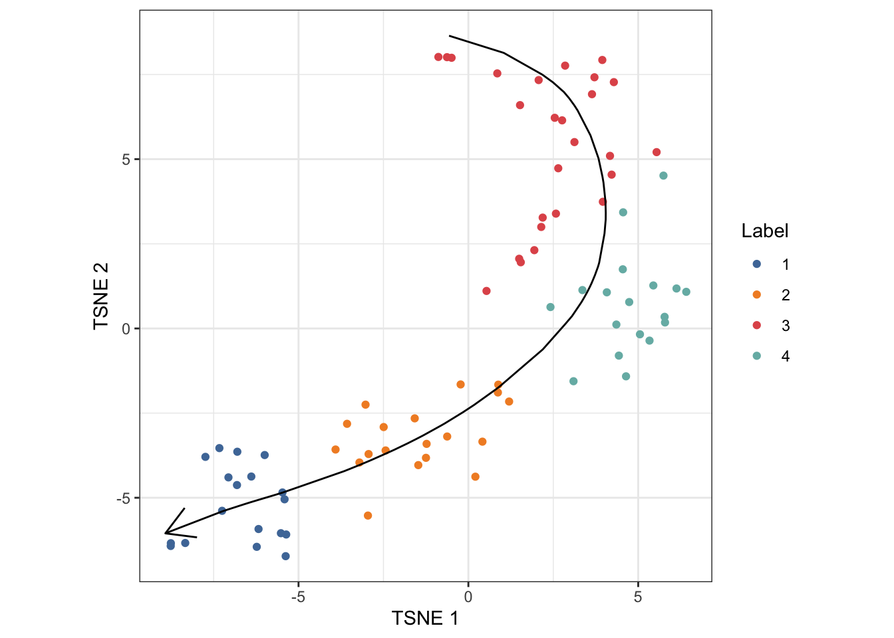
Plot TSNE dimension coloured by pseudotime:
ggplot(dat, aes(TSNE.1, TSNE.2)) +
geom_point(aes(colour = slingPseudotime_1), size = 2) +
geom_path(data = cur.1, aes(Dim.1, Dim.2), arrow = arrow()) +
scale_colour_viridis_c() +
labs(x = "TSNE 1", y = "TSNE 2", colour = "Pseudotime") +
theme_bw() +
theme(aspect.ratio = 1)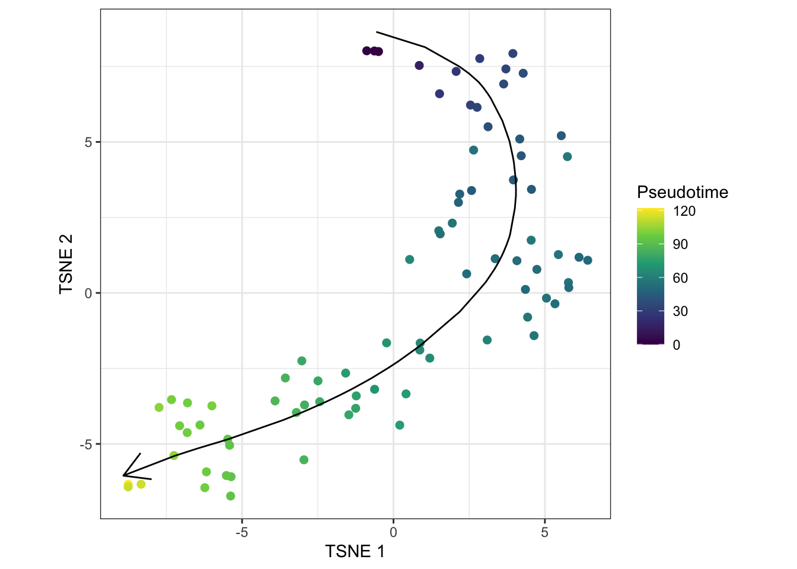
UMAP
Embed trajectory in UMAP space:
cur <- embedCurves(sce, "UMAP")Extract first principal curve:
cur.1 <- slingCurves(cur)[[1]]
cur.1 <- data.frame(cur.1$s[cur.1$ord, ])
colnames(cur.1) <- c("Dim.1", "Dim.2")Plot UMAP dimension coloured by label:
ggplot(dat, aes(UMAP.1, UMAP.2)) +
geom_point(aes(colour = label)) +
geom_path(data = cur.1, aes(Dim.1, Dim.2), arrow = arrow()) +
scale_colour_tableau() +
labs(x = "UMAP 1", y = "UMAP 2", colour = "Label") +
theme_bw() +
theme(aspect.ratio = 1)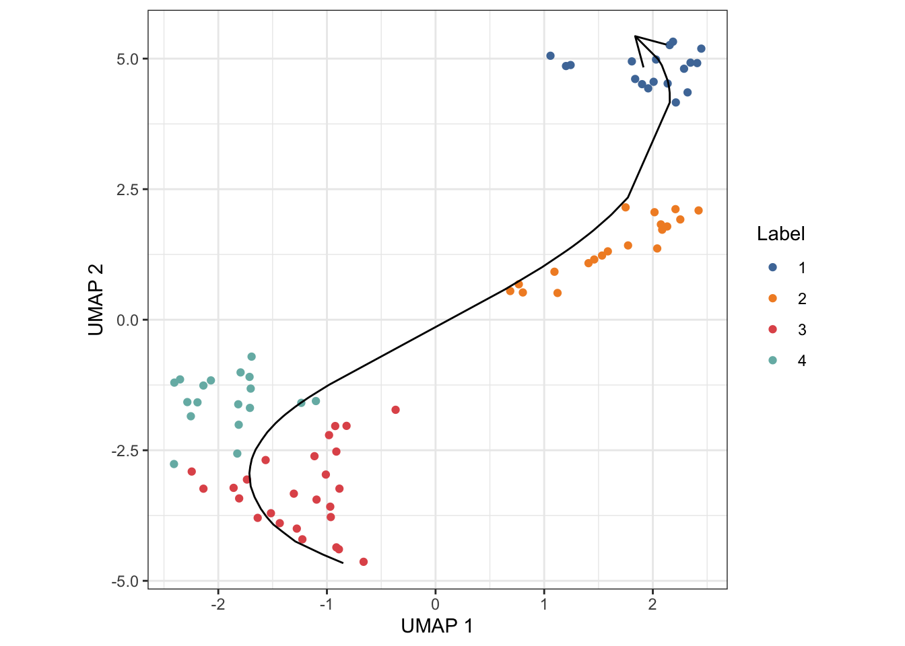
Plot UMAP dimension coloured by pseudotime:
ggplot(dat, aes(UMAP.1, UMAP.2)) +
geom_point(aes(colour = slingPseudotime_1), size = 2) +
geom_path(data = cur.1, aes(Dim.1, Dim.2), arrow = arrow()) +
scale_colour_viridis_c() +
labs(x = "UMAP 1", y = "UMAP 2", colour = "Pseudotime") +
theme_bw() +
theme(aspect.ratio = 1)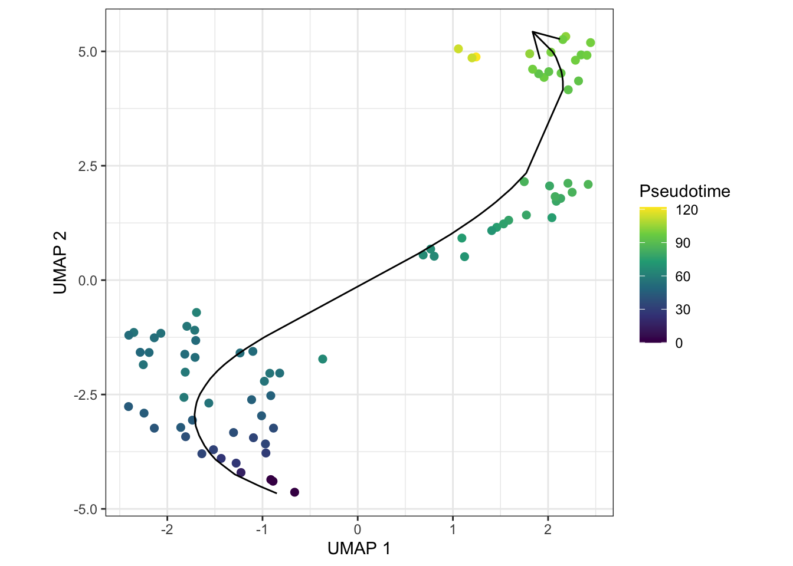
DiffusionMap
Embed trajectory in DiffusionMap space:
cur <- embedCurves(sce, "DiffusionMap")Extract first principal curve:
cur.1 <- slingCurves(cur)[[1]]
cur.1 <- data.frame(cur.1$s[cur.1$ord, ])
colnames(cur.1) <- c("Dim.1", "Dim.2")Plot DiffusionMap dimension coloured by label:
ggplot(dat, aes(DiffusionMap.1, DiffusionMap.2)) +
geom_point(aes(colour = label)) +
geom_path(data = cur.1, aes(Dim.1, Dim.2), arrow = arrow()) +
scale_colour_tableau() +
labs(x = "DiffusionMap 1", y = "DiffusionMap 2", colour = "Label") +
theme_bw() +
theme(aspect.ratio = 1)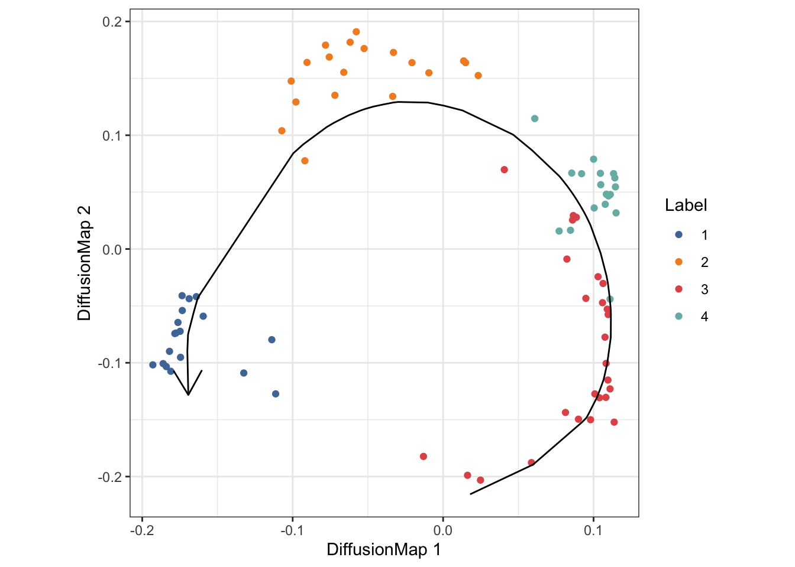
Plot DiffusionMap dimension coloured by pseudotime:
ggplot(dat, aes(DiffusionMap.1, DiffusionMap.2)) +
geom_point(aes(colour = slingPseudotime_1), size = 2) +
geom_path(data = cur.1, aes(Dim.1, Dim.2), arrow = arrow()) +
scale_colour_viridis_c() +
labs(x = "DiffusionMap 1", y = "DiffusionMap 2", colour = "Pseudotime") +
theme_bw() +
theme(aspect.ratio = 1)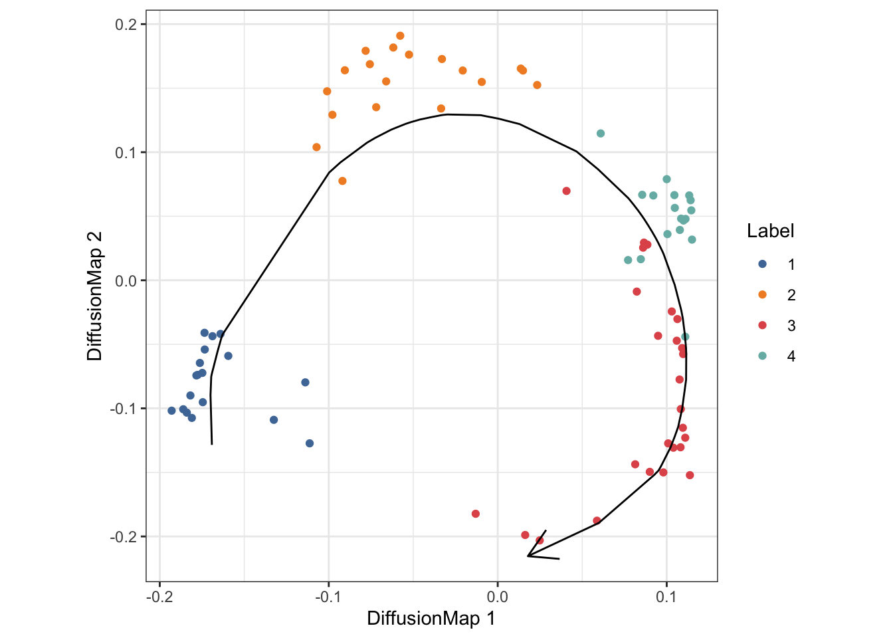
testPseudotime
Test for differences along pseudotime:
set.seed(0010110101)
res <- TSCAN::testPseudotime(sce, pseudotime = sce$slingPseudotime_1)Subset by significance threshold:
sig <- subset(res, FDR < 0.05)Identify Top 100 genes:
ind <- head(order(abs(sig$logFC), decreasing = TRUE), n = 100)Plot heatmap of significant genes:
plotHeatmap(
object = sce,
features = rownames(sig)[ind],
exprs_values = "logcounts",
center = TRUE,
zlim = c(-4, +4),
symmetric = TRUE,
colour_columns_by = "label",
order_columns_by = "slingPseudotime_1",
)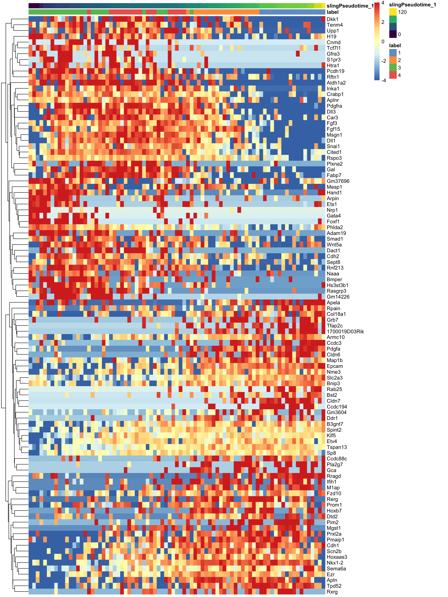
Summary
Output
Save experiment object:
saveRDS(sce, file = "output/secondary-analysis.rds")Session
Print session information:
sessionInfo()R version 4.0.2 (2020-06-22)
Platform: x86_64-apple-darwin17.0 (64-bit)
Running under: macOS Catalina 10.15.7
Matrix products: default
BLAS: /Library/Frameworks/R.framework/Versions/4.0/Resources/lib/libRblas.dylib
LAPACK: /Library/Frameworks/R.framework/Versions/4.0/Resources/lib/libRlapack.dylib
locale:
[1] en_GB.UTF-8/en_GB.UTF-8/en_GB.UTF-8/C/en_GB.UTF-8/en_GB.UTF-8
attached base packages:
[1] parallel stats4 stats graphics grDevices datasets utils
[8] methods base
other attached packages:
[1] pheatmap_1.0.12 ggthemes_4.2.4
[3] ggforce_0.3.2 slingshot_1.8.0
[5] princurve_2.1.6 scuttle_1.0.4
[7] scran_1.18.3 scater_1.18.3
[9] ggplot2_3.3.3 SingleCellExperiment_1.12.0
[11] SummarizedExperiment_1.20.0 Biobase_2.50.0
[13] GenomicRanges_1.42.0 GenomeInfoDb_1.26.2
[15] IRanges_2.24.1 S4Vectors_0.28.1
[17] BiocGenerics_0.36.0 MatrixGenerics_1.2.0
[19] matrixStats_0.57.0 bluster_1.0.0
[21] workflowr_1.6.2
loaded via a namespace (and not attached):
[1] tidyselect_1.1.0 htmlwidgets_1.5.3
[3] grid_4.0.2 combinat_0.0-8
[5] ranger_0.12.1 BiocParallel_1.24.1
[7] Rtsne_0.15 munsell_0.5.0
[9] destiny_3.4.0 codetools_0.2-18
[11] statmod_1.4.35 DT_0.17
[13] withr_2.4.1 colorspace_2.0-0
[15] fastICA_1.2-2 knitr_1.30
[17] rstudioapi_0.13 robustbase_0.93-7
[19] vcd_1.4-8 VIM_6.1.0
[21] TTR_0.24.2 labeling_0.4.2
[23] git2r_0.28.0 GenomeInfoDbData_1.2.4
[25] polyclip_1.10-0 farver_2.0.3
[27] rprojroot_2.0.2 vctrs_0.3.6
[29] generics_0.1.0 xfun_0.20
[31] R6_2.5.0 ggbeeswarm_0.6.0
[33] rsvd_1.0.3 RcppEigen_0.3.3.9.1
[35] locfit_1.5-9.4 bitops_1.0-6
[37] DelayedArray_0.16.1 assertthat_0.2.1
[39] promises_1.1.1 scales_1.1.1
[41] nnet_7.3-15 beeswarm_0.2.3
[43] gtable_0.3.0 beachmat_2.6.4
[45] rlang_0.4.10 scatterplot3d_0.3-41
[47] splines_4.0.2 hexbin_1.28.2
[49] yaml_2.2.1 abind_1.4-5
[51] crosstalk_1.1.1 httpuv_1.5.5
[53] tools_4.0.2 ellipsis_0.3.1
[55] gplots_3.1.1 RColorBrewer_1.1-2
[57] proxy_0.4-24 Rcpp_1.0.6
[59] plyr_1.8.6 sparseMatrixStats_1.2.0
[61] zlibbioc_1.36.0 purrr_0.3.4
[63] RCurl_1.98-1.2 viridis_0.5.1
[65] zoo_1.8-8 haven_2.3.1
[67] fs_1.5.0 magrittr_2.0.1
[69] data.table_1.13.6 RSpectra_0.16-0
[71] openxlsx_4.2.3 lmtest_0.9-38
[73] pcaMethods_1.82.0 whisker_0.4
[75] xtable_1.8-4 mime_0.9
[77] hms_1.0.0 evaluate_0.14
[79] smoother_1.1 rio_0.5.16
[81] mclust_5.4.7 readxl_1.3.1
[83] gridExtra_2.3 compiler_4.0.2
[85] tibble_3.0.5 KernSmooth_2.23-18
[87] crayon_1.3.4 htmltools_0.5.1.1
[89] mgcv_1.8-33 later_1.1.0.1
[91] tidyr_1.1.2 DBI_1.1.1
[93] tweenr_1.0.1 MASS_7.3-53
[95] boot_1.3-26 Matrix_1.3-2
[97] car_3.0-10 igraph_1.2.6
[99] forcats_0.5.0 pkgconfig_2.0.3
[101] foreign_0.8-81 laeken_0.5.1
[103] sp_1.4-5 vipor_0.4.5
[105] dqrng_0.2.1 XVector_0.30.0
[107] stringr_1.4.0 digest_0.6.27
[109] rmarkdown_2.6 cellranger_1.1.0
[111] TSCAN_1.28.0 uwot_0.1.10
[113] edgeR_3.32.1 DelayedMatrixStats_1.12.2
[115] curl_4.3 shiny_1.6.0
[117] gtools_3.8.2 ggplot.multistats_1.0.0
[119] lifecycle_0.2.0 nlme_3.1-151
[121] jsonlite_1.7.2 carData_3.0-4
[123] BiocNeighbors_1.8.2 viridisLite_0.3.0
[125] limma_3.46.0 pillar_1.4.7
[127] lattice_0.20-41 fastmap_1.1.0
[129] DEoptimR_1.0-8 glue_1.4.2
[131] xts_0.12.1 zip_2.1.1
[133] FNN_1.1.3 class_7.3-18
[135] stringi_1.5.3 RcppHNSW_0.3.0
[137] BiocSingular_1.6.0 caTools_1.18.1
[139] renv_0.12.5 dplyr_1.0.3
[141] irlba_2.3.3 knn.covertree_1.0
[143] e1071_1.7-4 ape_5.4-1